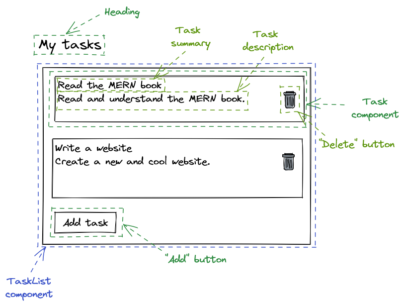

Getting things done in MERN
by Mikhail Berkov and Jannis Morgenstern
Introduction
— Sun Tzu
Long gone are the times when JavaScript was just a scripting language to add simple interactive behaviour to websites. The ECMAScript 2015 standard significantly improved the usability of the language. Excellent UI libraries like React allow you to write straightforward declarative code which massively simplifies building user interfaces. Thanks to Node.js you can write JavaScript on the server. Express.js empowers you to write complex APIs very quickly and MongoDB provides a document-oriented database that fits right in with the other tools. The MERN stack (MongoDb, Express.js, React, Node.js) therefore allows you to quickly develop complex applications using just one language - JavaScript (with optional static typing via TypeScript).
This book serves as an introduction to the MERN stack. However you don't learn software development by just reading books, you learn it by creating projects. We will therefore not bombard you with useless language trivia for hundreds of pages. If you care about that, go read the standard - it's pretty comprehensive. Instead we will create a real software project - an application for managing tasks called easy-opus (get it?). We will begin with nothing more than an empty project directory and the will to learn. We will end with a useful piece of software that allows us to create tasks, assign tasks to different users, update their statuses and much more.
This book is therefore inherently practical - unlike some other literature we will not dwell much on theoretical considerations. On the other hand, purely practical concerns are first-class citizens here (for example there is an entire chapter devoted to hosting your application). This doesn't mean that theory bad, practice good. It simply means that the approach for this particular book is heavily geared towards completing a real software project.
This book is therefore also not about becoming yet another JavaScript guru™ (there are already too many of them). It's about writing a useful product. It is fundamentally about getting things done. The MERN stack is really just a tool we use to get things done.
This book is suitable for both beginners who want to pick up their first tech stack as well as for seasoned software developers looking to expand their knowledge.
This book is intended to be a standalone resource. While there are resources for further reading in each section, these are merely pointers if you want to dive deeper into a certain topic. You don't have to read them and you should be able to understand everything without reading them. In fact, if you are hard stuck in a certain place, this probably represents a failure on our part. Maybe we didn't explain an important concept well enough (or at all!). Don't hesitate to write an email to uhasker@protonmail.com or to create an issue at https://github.com/uhasker/getting-things-done-in-mern explaining your problem.
Happy hacking
Mikhail Berkov and Jannis Morgenstern
Chapter 1: A brief introduction to JavaScript
- Confucius
First we will need to go through the basics of the JavaScript language that we will use pretty much everywhere throughout this book. After all the Next.js stack is built on top of it.
You will setup your runtime, learn about variables, data types, operators and control flow. You will also learn how to write functions and how to think functionally. Thinking functionally will make you a better software developer and a better person. Isn't that great?
Let's dive right in!
Hello world
— Ancient Chinese proverb
Runtime environments
Contrary to popular belief, code sadly doesn't run on magic or unicorn tears. Instead, it runs on something called a runtime (also referred to as runtime environment). Put simply, a runtime is a program capable of executing code written in some programming language. It provides the environment in which programs can run. In order to execute all the awesome JavaScript code we are about to write, we therefore need a runtime first.
There are two runtimes capable of executing JavaScript code which are relevant to this book - the browser and Node.js. Every runtime environment comes with a console which allows us to interact with and observe the output of JavaScript code.
In this section we will setup the browser and Node.js runtimes. Then we will print "Hello, world!" both to the browser console and to the Node.js console to test that our setup works as expected.
The browser environment
Open a browser and open the console in your browser. If you are using Firefox the shortcut for opening the console is Ctrl + Shift + K on Windows or Linux and Cmd + Shift + K on a Mac. If you are using Chrome or Microsoft Edge the shortcut is Ctrl + Shift + J on Windows or Linux and Cmd + Option + J on a Mac.
If you are using Internet Explorer, please navigate to
google.comand search for "Firefox" to install a real browser. This line was originally intended to be a funny joke, but on June 15, 2022 Microsoft ended support for Internet Explorer, so it's not even a joke anymore. We recommend Firefox, but this is purely a personal preference. Chrome and Microsoft Edge are absolutely fine as well.
This is how the browser console will approximately look like on Firefox:

Note that if you see a bunch of scary error or warning messages upon opening the console, don't panic (this is also good life advice in general). Most of these will probably come from various extensions you might have installed or the web page you are currently viewing. Simply delete the messages by clicking the icon in the top left of the console (trash can in Firefox - might vary in different browsers), as we don't care about them.
The browser as well as the Node.js console have REPL (read-eval-print-loop) capabilities. This just means that you can type some code into the console directly and execute it. REPLs are very nice, because they allow you to quickly test what you just learned.
Let's print something using the console.log method. Type the following into the browser console:
console.log('Hello, world!');
Now hit Return (you may also know this as Enter or simply ⏎). You will see the output "Hello, world!" in the console:

Ignore the "undefined" for now.
Hooray, we printed something to the browser console! This is the point at which you go tell everyone that you are now a programmer™.
Executing JavaScript from an HTML file
Instead of executing JavaScript in the browser console directly, we can (and often will) execute it from an HTML file. HTML is short for HyperText Markup Language and is the standard markup language for documents that should be displayed in a browser. We will cover HTML in chapter 2 - for now we just want to get a quick glimpse at it.
Create a new HTML file. We will call it hello.html, however you can name it whatever you want. The filename should have an html extension though.
If you are on a Windows machine, you probably cannot create a file with an
htmlextension directly. In that case simply create an emptytxtfile and change the extension tohtml.
Open the HTML file in any text editor (we recommend you use Visual Studio Code) and add the following text to the file:
<!DOCTYPE html>
<html>
<head></head>
<body>
<script>
console.log('Hello, world!');
</script>
</body>
</html>
Don't forget to save the file!
Note the semicolon after the console.log. It terminates the
console.logstatement. The semicolon is not technically required here. Indeed there are many JavaScript programmers who don't write semicolons. However to avoid a bunch of pitfalls we will use semicolons throughout this book and therefore we want you to get used to them as soon as possible.
Now open this file in your browser. If the html file extension is associated with your browser, you should be able to do so by simply double-clicking the file. If this is not the case, right-click the file. A menu containing the option "Open with" should pop up. Click on any browser name from the "Open with" submenu. This is how it would look like on Windows 11:

Alternatively just copy the path of the file and paste it into the address bar of your browser prefixed by file:///. For example if the file name is C:/Users/Example/Desktop/hello.html, you can open the file by typing file:///C:/Users/Example/Desktop/hello.html into the address bar and hitting Return:

You can find out the path of a file by right-clicking the file and selecting Properties. The window that opens should show the file location.
After opening this file in your browser, open the console again. You should see "Hello, world!" printed there.
Node.js
For a long time, programmers used JavaScript mostly inside the browser runtime environment. However in 2009 Node.js came along and changed that by allowing programmers to easily run JavaScript outside the browser.
Node.js will probably not be installed on your machine, so let's fix that. Grab Node.js from https://nodejs.org:

Note that by the time you are reading this book the Node.js version you see on
https://nodejs.orgmight be different.
You want to download the LTS (long term support) version. Click the big green button with the LTS version. This will download a Windows installer file. Execute the installer file just like you would execute any installer by double-clicking it. You will be presented with a bunch of options during the installation - just click "Next" everywhere and you will be fine.
Now we need to open a command-line interface (also called command line, command prompt or CLI) on our computer. A command line allows you to execute various tasks (called commands) on your computer.
On Windows, you can open the CLI by opening the "Run" window using Win + R, typing cmd and pressing the "Ok" button:

Alternatively you can type "cmd" into the search field. An app called "command prompt" should show up. Simply click the app and a CLI should open:

No matter how you do it, you should now stare at a beautiful command line. Take a second and bask in it's glory for a while.
After you're done basking, let's try and execute a command. For example we can use the echo command to output text. Try typing the following in your CLI:
echo "Hello, world!"
Now hit Return and you should see the following result:

Note that on a Mac you can open the command line by hitting Cmd + Space to open search, typing terminal and hitting Return.
If you're on a Linux system you should really know how to open a command line.
Now that the command line is open, execute the node command to open a Node.js console. You can do so by typing node and hitting Return. You should see something like the following (again the Node.js version might be different):

Now let's again print "Hello, world!" using the console.log method. Type the following into the Node.js console and hit Return:
console.log('Hello, world!');
You should see "Hello, world!" printed to the console:

Executing a file
Before moving on, let's execute a JavaScript file containing some code. Create a file named hello.js. Open the file in any text editor (preferably Visual Studio Code) and add the following content to the file:
console.log('Hello, world!');
If you are on a Windows machine, you probably cannot create a file with a
jsextension directly. In that case simply create an emptytxtfile and change the extension tojs.
Again open a command line and change the current directory location to the directory containing the JavaScript file. You can do so using the cd command. For example if hello.js is located at C:/Users/Example/Desktop you would execute the following:
cd C:/Users/Example/Desktop
You can find out the directory containing the JavaScript file by right-clicking the file and selecting Properties. The resulting window should show the directory path.
Now execute the JavaScript file by running:
node hello.js
This should again print "Hello, world!":

Note that for the remainder of chapter 1 you should follow along using the Node.js console as we will be discussing the language itself. Nevertheless, as we begin writing the project in chapter 2, we will have to write JavaScript for the browser runtime environment on a regular basis.
Statements and expressions
Before we dive into JavaScript, you should know what statements and expressions are.
A statement is a syntactic unit responsible for executing some action. A program is then essentially a sequence of statements which should be executed when running the program. For example console.log('Hello, world!') is a statement which executes the action of printing "Hello, world!" to the console.
An expression is a syntactic unit that may be evaluated to get its value. For example 2 + 2 would be an expression which would evaluate to 4. Note that since any expression also executes some action, any expression is therefore a statement.
You could put it this way: Statements in general are executed to make something happen, while expressions in specific are evaluated to produce a value.
Comments
Everything that is after a double slash on a line in JavaScript is a comment. Comments are ignored by the runtime and therefore have no effect for the execution of your program:
// This is just a comment
// Comments have no effect
console.log('Hello, world!');
// Therefore this program is equivalent to the
// program from the previous chapter
We will heavily utilize comments throughout this book inside the code blocks to highlight important ideas.
There is a lot of discussion on how much you should comment your programs. We will return to this when discussing functions. However one rule is that if your code is so terrible that it requires extensive commentary to explain its behavior or purpose, you should fix the code. Just like a work of art, your code should stand on it's own merits. Imagine commenting a work of art (oh, wait)... However it is better to have terrible code and comments than have terrible code and no comments.
We will also adopt the convention that if a comment is next to a line with a console.log statement, that comment shows the output that would be logged to the console if the code was run. For example:
console.log('Hello, world!'); // Hello, world!
This is the point where we tell you that while you are reading this book you should absolutely follow along in some runtime (probably Node.js, but a browser is fine too). This is very important. Go ahead and open a Node.js console now.
Come on, we'll wait...
...
...
...
Finally. Let's move on.
Summary
You learned about JavaScript runtimes and the console. You also learned how to print "Hello, world!" to the console to check that your runtime works as expected.
Further reading
There is no further reading for this section.
Primitive data types
=== is the one and true equality operator
==== is the equality operator which transcends time and space
===== is the equality operator which transcends all other equality operators
======= is the equality operator which summons the UNSPEAKABLE DOOM h̷̳͓͝ě̵̞͂ ̵̮͍͊͋i̴͎͂s̵̗͒ ̷̘̤̓̅h̸͜͝ḙ̵̀r̶͈̆ȇ̶̗̱̍ ̸͕̾h̴̲̗̾̅e̷̟̋ả̶̬v̶̯́̐͜ẽ̸̛͔n̶̩̒͊ ̴̢̯̍ḣ̵̳̻e̴̙̒̓l̵͇̟̃p̶̘̑ ̷̠͛͝ŭ̴͇̯̕s̶̮͕̒
— from "The Book of the Equality Operators and their Virtue" by Laozi
Variables
Whenever we write programs, we need to manipulate data. This data needs to be stored somewhere and we need to be able to access it somehow. We also need to deal with the fact that when we execute a program, the values we deal with are not predictable in advance. For example we don't know which tasks a user might create. Nevertheless, we must be able to access created tasks through a predictable name like tasks or createdTasks. Therefore we need a way to put an unpredictable value in storage and refer to it using a predictable name.
A variable is just that - a storage location containing a value which is referred to by a symbolic name. This sounds really fancy, but it just means that there is a value somewhere in your storage and you can refer to that value using a predictable name (even if the value itself is not predictable).
For example you could have a variable x which has the value 5 (we say that x is equal to 5):

Now even if the value of x changes (e.g. to 6), the variable name doesn't change, only the value does. That is the variable name is still x, however now x has the value 6 (i.e. x is equal to 6):

JavaScript lets you declare variables with the let keyword. You can assign values to variables using the assignment operator (=):
// Declare a variable
let x;
// Assign a value to a variable
x = 10;
We can print the value of the variable using the console.log method:
console.log(x); // 10
If you follow along in the Node.js (or browser) console, you don't actually need to use the
console.logmethod to print the value of a variable. Instead you can simply type the variable (or any expression for that matter) and the console will display its value.
You can also have a declaration and an assignment on a single line. In fact, this is usually the way to go:
let y = 10;
The value of a variable may change over the course of a program:
let y = 10;
console.log(y); // 10
// Assign a new value to the variable
y = 20;
console.log(y); // 20
This will print 10 first and then 20.
If you want to declare a symbolic name for a value that never changes, you can declare a constant. This is done using the const keyword:
const ten = 10;
If you try to reassign a value to a constant, you get an error. For example if you do
const ten = 10;
ten = 20;
you get
Uncaught TypeError: Assignment to constant variable.
You will almost exclusively see us using const instead of let from now on. Reassignment is not nearly as necessary as you might think right now.
You can also declare variables using the
varkeyword. We will not cover it here and you essentially only need to know one thing aboutvar- you should basically never use it. It's mostly a historical artifact of the language at this point.
Any variable has a data type which denotes the range of values it can take and which operations can be performed on the variable. You can use the typeof operator to obtain the data type of a variable.
We begin with the primitive data types.
Numbers
You've already encountered the Number data type:
const n = 10;
console.log(typeof n); // number
Any integer or real number is a Number. So far, so obvious. However there are also some other things which have type Number like Infinity. We don't care about these for now, just keep in mind that JavaScript numbers are more than just integers and reals.
console.log(typeof 42); // number
console.log(typeof -20); // number
console.log(typeof 3.4); // number
console.log(typeof -1.7); // number
console.log(typeof Infinity); // number
You can perform arithmetic on numbers using the usual arithmetic operators +, -, * and /. There is also the % (modulo) operator which returns the remainder of a division. Finally, there is the ** operator which does exponentiation:
const a = 3;
const b = 4;
console.log(a + b); // 7
console.log(a - b); // -1
console.log(a * b); // 12
console.log(a / b); // 0.75
console.log(a % b); // 3
console.log(a ** b); // 81
Booleans
Another primitive type is the Boolean type. This allows you to represent values which are either true or false:
const thisBookIsAwesome = true;
const thisBookSucks = false;
console.log(typeof thisBookIsAwesome); // boolean
console.log(typeof thisBookSucks); // boolean
You can do simple logic using the logical operators && (which denotes and), || (which denotes or) and ! (which denotes not).
The && (and) operator takes two values and evaluates to true only if both values are true and to false otherwise:
console.log(true && true); // true
console.log(false && true); // false
console.log(true && false); // false
console.log(false && false); // false
The || (or) operator takes two values and evaluates to true if at least one of the values is true (and to false otherwise):
console.log(true || true); // true
console.log(false || true); // true
console.log(true || false); // true
console.log(false || false); // false
The ! (not) operator takes a single value and simply negates it:
console.log(!true); // false
console.log(!false); // true
Here is an example with all the operators together:
const b1 = true;
const b2 = false;
console.log(b1 && b2); // false
console.log(b1 || b2); // true
console.log(!b1); // false
Note that technically all the logical operators can take any value (not just boolean values). The result of the logical operator application is then dependent on whether the values are truthy or falsy. We will discuss this a bit later.
A boolean variable is usually the result of an expression. Often it is the result of an expression containing the equality operator (===) which allows us to compare the values of variables:
const x1 = 5;
const x2 = 10;
const x3 = 5;
console.log(x1 === x1); // true
console.log(x1 === x2); // false
console.log(x1 === x3); // true
There is also another equality operator (
==). It can be best described as an April Fools' joke that somehow made it into the language. Never use it.
If you want to write not equals you can use !==:
console.log(5 !== 10); // true
console.log(5 !== 5); // false
Strings
Another primitive data type is the String type. A string is simply a bunch of characters and is used to represent text. Strings are usually written using single quotes in JavaScript:
const s = 'Some text';
console.log(typeof s); // string
Note that it's also possible to write strings using double quotes, however in most projects strings are written using single quotes. We will stick to this convention.
The + operator works on strings and does concatenation:
const s1 = 'MERN ';
const s2 = 'book';
console.log(s1 + s2); // MERN book
Note that instead of doing concatentation all the time you can also use template strings (also called template literals). This allows writing JavaScript expressions directly inside strings. Consider the following example:
const s = 'world';
const greeting = `Hello ${s}!`;
console.log(greeting); // Hello world!
Template strings are written using backticks (not single quotes). They may contain so called placeholders which are expressions embedded inside ${...}. These expressions can be any valid JavaScript expression that evaluates to a value implicitly convertible to a string:
console.log(`2 + 2 = ${2 + 2}`); // 2 + 2 = 4
You can get the length (i.e. the number of characters) of a string like this:
const s = 'MERN book';
console.log(s.length); // 9
Undefined
Finally there is one more primitive type that is of interest to us, namely undefined. There is only one value of this type, which is also called undefined. If a variable has the value undefined this (quite logically) means that it hasn't been defined. For example, whenever you have a variable that has been initialized, but not assigned to, it will automatically have the value and therefore the type undefined.
let someVariable;
console.log(someVariable); // undefined
console.log(typeof someVariable); // undefined
Note that
string,number,booleanandundefinedare not the only primitive data types. Two other primitive data types aresymbolandbigint. And there is one more primitive data type that we will encounter soon.
Summary
You learned how to declare variables using let and constants using const. You also learned about numbers, strings, booleans and undefined.
Further reading
Arrays and objects
— Confucius
Arrays
Let's say you are writing a task application (just how did I come up with that example?) and you need to store a bunch of tasks. You could of course declare a separate variable for every task like this:
const task1 = 'First task';
const task2 = 'Second task';
const task3 = 'Third task';
However this would quickly become very tedious. In addition you may want to add or delete tasks. Adding and deleting variables will become even more tedious. It would become almost as tedious as repeating the word tedious over and over. Did we mention that this is really tedious? As you can see, we need a way to store multiple values in a single variable.
A JavaScript array is an ordered collection of multiple values. You can declare an array using square brackets:
const tasks = ['First task', 'Second task', 'Third task'];
Note that an array is no longer a primitive type, instead arrays have type object:
console.log(typeof tasks); // object
You can access individual elements of an array using the index notation. You simply write the name of the array, followed by the position of the element you want to retrieve inside square brackets. Note that when we count the indices (positions), we starts at 0, not at 1:
console.log(tasks[0]); // First task
console.log(tasks[1]); // Second task
console.log(tasks[2]); // Third task
If the array index is too big, trying to access the element at that index will return undefined:
console.log(tasks[3]); // undefined
You can get the length of an array by using .length:
console.log(tasks.length); // 3
You can change an array element using the index notation and the assignment operator. For example here is how you would change the second element of the tasks array (remember that the second element has index 1):
tasks[1] = 'Some other task';
console.log(tasks[1]); // Some other task
Note that even despite the fact the
tasksarray is declared as a constant here, you can still change the contents of the array. However you can't reassigntasksto something else, i.e. you can't write something liketasks = [1].
JavaScript has some elegant syntax for working with arrays. If you want to assign variables based on values of an array, you would normally have to do something like this:
const firstTask = tasks[0];
const secondTask = tasks[1];
const thirdTask = tasks[2];
This is (you guessed it) tedious. Instead you can do this:
const [firstTask, secondTask, thirdTask] = tasks;
This is called array destructuring assignment. If you only care about some of the elements, you can use the spread (...) syntax:
const [firstTask, ...otherTasks] = tasks;
Something that commonly trips up beginners is trying to copy an array. Let's say you have an array of numbers called arr and you want to create a copy called arr2. You would probably try something like
const arr = [1, 2, 3, 4];
const arr2 = arr;
This is wrong. Let's try changing the first element of arr and look at arr[0] and arr2[0]:
arr[0] = 5;
console.log(arr[0]); // 5
console.log(arr2[0]); // 5
Uh-oh! That's probably not what we want. The reason for this behaviour is that arr and arr2 both point to the same array. Remember how we were careful to introduce a variable as a storage location together with a symbolic name? Well, it turns out that different symbol names may refer to the exact same storage location. You can visualize it like this:

Here we have a storage location containing the values 1, 2, 3 and 4 somewhere. We also have two symbolic names arr and arr2. While the symbolic names are different, they point to the same storage location. Therefore if we change the storage location, we will observe a change via both symbolic names.
In order to actually copy the storage location as well, we can in fact use the spread syntax as this will copy the values:
const copied = [...arr];
Let's check that this indeed an actual copy:
arr[0] = 5;
console.log(arr[0]); // 5
console.log(copied[0]); // 1
This looks good. This is the mental picture you should have in your head for copying an array:

If you only briefly skimmed the section on array destructuring and the spread syntax, go right back and read it carefully. These two concepts will come up a lot in the following chapters (much more often than you think right now).
Objects
Let's return to our (yet) imaginary task application. A task will probably be something more than just a string. For example it might contain an ID, a summary and a description. We could again store these in constants:
const taskId = 1;
const taskSummary = 'Read the MERN book';
const taskDescription = 'Read and understand the MERN book.';
As you can probably guess, this will quickly become tedious (oh no, not this again). Objects to the rescue! These allow us to store name-value pairs inside a single variable:
const task = {
id: 1,
summary: 'Read the MERN book',
description: 'Read and understand the MERN book.',
};
Every such value is called a property. We can access properties using the dot notation or the square bracket notation. For example to access the summary property of the task object, you would write task.summary or task['summary']. Try it out:
console.log(task.id); // 1
console.log(task.summary); // Read the MERN book
console.log(task.description); // Read and understand the MERN book.
console.log(task['id']); // 1
console.log(task['summary']); // Read the MERN book
console.log(task['description']); // Read and understand the MERN book.
Properties don't have to be primitive values. They can also be other objects. Generally speaking, you can arbitrarily nest objects and arrays. For example, here is how you can nest an object inside an object:
const person = {
name: 'John Doe',
task: {
id: 1,
summary: 'Read the MERN book',
description: 'Read and understand the MERN book.',
},
};
In this case you can use the . notation to access properties at any nesting level. Let's you want to get the summary of the task that's been assigned to the person. Then you can write person.task.summary:
console.log(person.task.summary); // Read the MERN book
If you try to access a property that doesn't exist, the result will be undefined (there it is again):
console.log(task.date); // undefined
Sometimes you want to explicitly indicate that a property may be absent. For example a person may not have a task assigned to them. You could do something like this:
const person = {
name: 'John Doe',
task: undefined,
};
This has the potential problem that someone referring to person.task will have no idea whether it is undefined because the property is not supposed to exist at all or because it it simply absent for this particular person. This is why JavaScript introduced null:
const person = {
name: 'Max Mustermann',
task: null,
};
Basically null allows you to say - "hey, this property does exist in principle, it's just absent for this particular variable". However note that this is only a convention. There is nothing that prevents you from using undefined to denote absence all the time and in fact we will do so in this very book. Just keep in mind that null exists and that some developers use it to indicate absence (and that it's totally fine to do so).
Remember how we said that there is one more primitive data type left? Well - there it is. The final primitive data type is null. This is something a lot of people are really confused about, because typeof null returns object (and not e.g. null). However this is primarily a technical detail. Despite the fact that null is a separate data type it doesn't hurt to think of it as an object (namely an absent one).
Just as with arrays, you can use destructuring assignment when working with objects:
const task = {
id: 1,
summary: 'Read the MERN book',
description: 'Read and understand the MERN book.',
};
const { id, summary, description } = task;
And just like with arrays, you can use the spread syntax:
const taskWithAssignee = {
assignee: 'Max',
...task,
};
console.log(taskWithAssignee);
This will print:
{
assignee: 'Max',
id: 1,
summary: 'Read the MERN book',
description: 'Read and understand the MERN book.'
}
Note that objects are more than just containers for values. We will talk about this in the section on functions.
Summary
You have learned how to work with arrays and objects. You have also learned about (array and object) destructuring and the spread syntax.
Further reading
There is no further reading for this section.
Control flow
— Ancient Chinese proverb
If statements
Quite often, we need to make decisions in our programs. Let's say we want to display a fancy message when a bunch of tasks are completed. This is a decision: If all the tasks are completed, then we want to display a message. Put generally: If a condition holds (is true), then we want to do something.
Conveniently, the language keyword that allows us to accomplish this is called if:
const completed = true;
if (completed) {
console.log('Hooray, you completed all your tasks!');
}
This would print:
Hooray, you completed all your tasks!
The general form of an if statement looks like this:
if (condition) {
statements;
}
If condition is true, then the statements inside the curly braces will be executed. If condition is false, nothing will happen.
Note that technically it suffices if the condition is truthy or falsy. We will ignore this detail for now and return to it in a second.
The simplest condition is a boolean variable. However, nothing prevents us from writing more complex conditions. For example, let's say we have a list of uncompleted tasks (conveniently) named tasks. Then we could check that all tasks have been completed by checking whether tasks is empty (i.e. the length of tasks is zero):
if (tasks.length === 0) {
console.log('Hooray, you completed all your tasks!');
}
Sometimes you need to do something in one case and something else in another case. The (also conveniently named) else keyword allows you to accomplish exactly that. Let's say that if all the tasks haven't been completed yet, we want to display a different message:
if (tasks.length === 0) {
console.log('Hooray, you completed all your tasks!');
} else {
console.log('You still have some tasks to complete.');
}
The general form of an if...else statement looks like this:
if (condition) {
statements1;
} else {
statements2;
}
If condition is true, the statements corresponding to statements1 will be executed (i.e. the statements inside the curly braces after the if). If condition is false, the statements corresponding to statements2 will be executed (i.e. the statements inside the curly braces after the else).
Also note that there may be multiple statements between the curly braces. This is totally valid:
if (tasks.length === 0) {
console.log('Hooray, you completed all your tasks!');
console.log('Congratulations!');
console.log('No really, you are amazing!');
} else {
console.log('You still have some tasks to complete.');
console.log('Do not despair!');
}
Assuming tasks has a length of 0 this will print:
Hooray, you completed all your tasks!
Congratulations!
No really, you are amazing!
Sometimes you need to handle more than two cases. Since JavaScript was fresh out of keywords at this point, they allowed you to do so using else if:
if (tasks.length === 0) {
console.log('Hooray, you completed all your tasks!');
} else if (tasks.length === 1) {
console.log('Only one task left! Go! Go! Go!');
} else {
console.log('You still have some tasks to complete.');
}
The general form of an if...else if...else statement looks like this:
if (condition1) {
statements1;
} else if (condition2) {
statements2;
} /*possibly more else ifs*/ else if (conditionN) {
statementsN;
} else {
statementsElse;
}
Here all the conditions will be checked one after another. As soon as a condition is true, the corresponding statements will be executed. If no condition matches, the statements corresponding to statementsElse will be executed.
You can have any number of else if statements. For example this is valid:
if (tasks.length === 0) {
console.log('Hooray, you completed all your tasks!');
} else if (tasks.length === 1) {
console.log('Only one task left! Go! Go! Go!');
} else if (tasks.length === 2) {
console.log('You have two tasks to do.');
} else if (tasks.length === 3) {
console.log('There are three tasks left.');
} else {
console.log('You still have some tasks to complete.');
}
Note that the else block is not required. If it's missing and none of the conditions are true, nothing will happen.
Truthiness and falsiness
Note that the condition does not necessary have to be boolean as JavaScript will automatically convert non-boolean values to booleans. For example you could write something like this:
if (1) {
console.log('1 is truthy.');
} else {
console.log('1 is falsy.');
}
This will print "1 is truthy." because JavaScript will consider 1 to be true in this context since 1 is a truthy value.
Generally speaking, a truthy value is considered to be true when encountered in a boolean context (like a condition). A falsy value is considered to be false when encountered in a boolean context. The most important falsy values are false, 0, '' (empty string), null and undefined. Most other values (like 1, [] (empty array), [3], { example: 'hello' } etc) are truthy.
Try to avoid using non-boolean values in boolean contexts as it can lead to surprising behaviour. Nevertheless it's still useful to know about truthiness and falsiness, as it will otherwise trip you up in certain cases.
Ternary operator
The ternary operator takes a condition, an expression to execute if the condition is truthy and an expression to execute if the condition is falsy. It looks like this:
const doneMsg = 'All tasks are done';
const notDoneMsg = 'There are tasks left';
const msg = done ? doneMsg : notDoneMsg;
The general form is:
condition ? expression1 : expression2;
There is a very common thing complete beginners do with ternary operators which looks like this:
const finished = tasks.length === 0 ? true : false;
You should stop for a second a think about why this is unneccessary.
Thought about it? That's right. You can just write
const finished = tasks.length === 0;
Note that you cannot write arbitrary statements inside a ternary operator (and it wouldn't make a lot of sense anyway).
Optional chaining
Consider the following task object:
const mernTask = {
summary: 'Read the MERN book',
description: 'Read and understand the MERN book',
date: {
day: 8,
month: 6,
year: 2022,
},
};
Let's say we want to access the day of the task. We can do this by using mernTask.date.day. But what if the day does not have to be present, i.e. is optional? This could e.g. happen because the user didn't enter a task.
The object could look like this:
const mernTask = {
summary: 'Read the MERN book',
description: 'Read and understand the MERN book',
};
// or like this if you were to use `null`
const mernTask = {
summary: 'Read the MERN book',
description: 'Read and understand the MERN book',
date: null,
};
Then mernTask.date.day will fail with
Uncaught TypeError: Cannot read properties of undefined (reading 'day')
This makes sense since mernTask.date will result in undefined and you can't access a property on undefined. But let's say we would like to access the day and setting it to undefined if the date property is not present. Then we would need to do something like the following:
const day =
typeof mernTask.date !== undefined && mernTask.date !== null ? mernTask.date.day : undefined;
Alternatively we could make use of && and write:
const day = mernTask.date && mernTask.date.day;
Generally consider an object that has a bunch of values that may be absent (i.e. null or undefined). Working with such value will be annoying and only grow more cumbersome with deeper nesting. To avoid all this JavaScript allows you to do optional chaining. This works by writing ?. instead of . when trying to work on something that may be undefined. The above line would then become:
const day = mernTask.date?.day;
Now the result will be undefined instead of giving you a TypeError.
For..of loops
For..of loops allow you to iterate over arrays and strings (and some other things that we will cover later on) and perform a task for each element / character. Let's say you want to print all tasks from a list named tasks. You could do it like this:
const tasks = ['Task 1', 'Task 2', 'Task 3'];
for (let task of tasks) {
console.log(task);
}
This would print
Task 1
Task 2
Task 3
As we already mentioned, you can use a for..of loop to iterate over a string:
const str = 'Task';
for (let char of str) {
console.log(char);
}
This would print each charachter of the string, i.e.:
T
a
s
k
The general syntax of a for..of loop is
for (let variable of arrayOrString) {
statements;
}
It should be noted that if you don't change the variable inside the loop, you can and should also declare it as const. Our first example could therefore be rewritten to
const tasks = ['Task 1', 'Task 2', 'Task 3'];
for (const task of tasks) {
console.log(task);
}
There are also a bunch of other loops. We will cover them later. This is because you don't need them nearly as often as some people think.
Summary
You learned how to make decisions using if statements, if...else statements, if...else if...else statements and the ternary operator. You also learned how to address missing properties using optional chaining. Finally you learned how to iterate over strings and arrays using the for...of loop.
Further reading
Functions
"That makes no sense."
"Actually, it kind of does if you think about the history of functional programming."
— Dialogue between a master and his student
Declaring and calling functions
When programming we often have to perform some common actions over and over again. For example we might want to get the list of tasks assigned to a user at multiple parts within our software. Instead of writing code that (essentially) does the same thing multiple times we could use a function.
Within the function definition we would specify what statements should be executed. Then we can write a function call (also called function invocation). This would then actually execute the statements specified in the definition. We can simply group common actions into a function and then just call the function whenever we need the execute those actions.
Here is a very simple function definition:
function printGreeting() {
console.log('Hello world!');
}
Function definitions begin with the function keyword followed by the function name (in this case printGreeting). We will cover the meaning of the parentheses in a second, but the curly braces contain the body of the function. These are all the statements that will be executed when the function is called. In this case we have one statement, which will simply print Hello world! to the console.
You can call / invoke the printGreeting function by writing printGreeting():
printGreeting(); // Hello world!
You can of course have as many statements as you want inside the function body:
function printGreetings() {
console.log('Hello world!');
console.log('Hello again!');
}
These functions are not particularly interesting since they do the exact same thing for every function call. In this case, we print the exact same greeting(s) every time. But what if we wanted to print a different greeting depending on the user (containing e.g. the user name)?
We can solve this by defining function parameters. This allows us to pass values into the function, so that the function can adjust its behaviour. The function parameters go between the parentheses:
function printGreeting(user) {
console.log(`Hello ${user}!`);
}
printGreeting('Jane'); // Hello Jane!
In this example we have a single parameter called user. The function prints the greeting with the appropriate user. Within the function call we then pass the user (in this case Jane) as an argument to the function.
We can also return values from functions using the return keyword. Here is a function that takes a number and returns the square of it:
function square(num) {
return num * num;
}
We can now use the function as follows:
const squaredNum = square(3);
console.log(squaredNum); // 9
Functions are objects
Despite the fact that you get "function" when you use typeof with a function, functions are really just objects.
This means that we can assign functions as variables, pass them to other functions as arguments and do all the other neat things we can do with primitives and objects. For example we could assign the square function to a variable:
const square = function square(num) {
return num * num;
};
We could then call this like a regular function by doing e.g. square(3).
This is called a function expression. Note that the function may be anonymous here (i.e. it doesn't have a name). We could write this:
const square = function (num) {
return num * num;
};
The syntax for calling such a function is still the same, e.g. we could write square(3).
Arrow functions
There is a shorthand notation available in JavaScript called the arrow function notation. This notation allows you to omit certain keywords in certain situations. For example here is how you could rewrite the square function using the arrow function notation:
const square = (num) => num * num;
This is much shorter and less tedious (haha) indeed.
For an arrow function you only have to specify the parameter(s), followed by an arrow, followed by the returned value. If you have multiple parameters, you need to put them inside parentheses:
const add = (x, y) => x + y;
You can also have multiple statements in the function body, but then you have to specify the return keyword and surround the statements with curly braces:
const printAndGreet = (user) => {
const greeting = `Hello ${user}`;
console.log(greeting);
return greeting;
};
As you can see this is not too different from a regular function declaration or expression (unlike the square function, where the arrow notation was much shorter). It is therefore common practice to only use arrow functions for short functions like square. However this is again just convention.
One thing you might have noticed, is that we only showed you arrow function expressions. This is not an oversight but stems from the fact that there is no way to write a function declaration with the arrow function notation. Another difference is that arrow functions are always anonymous.
Methods
A method is a function which is a property of an object.
const greeter = {
greet: function () {
console.log('Hello, world!');
},
};
You can call a method like this:
greeter.greet(); // Hello, world!
Methods can refer to the properties of an object using the this keyword which is simply a reference to the current object:
const task = {
id: 1,
summary: 'Read the MERN book',
description: 'Read and understand the MERN book.',
longDescription: function () {
return `${this.summary}(ID = ${this.id}): ${this.description}`;
},
};
You can call the method by doing task.longDescription(). This would print:
Read the MERN book(ID = 1): Read and understand the MERN book.
A method can also change the properties of an object using the this keyword.
We will not dwell on methods for too long, since we will not use them all that often as this would lead to a ghastly thing called Object-Oriented Programming (OOP for short). Instead we want you to think functionally, which is what the next section will be about.
Inevitable disclaimer for certain Java/C#/... people: The sentence about OOP was a joke and used correctly, OOP has its merits. We just wanted to be funny. We're very sorry about that and will now perform the appropriate penance procedure.
Summary
You learned how to declare and call functions and methods. You also learned about the arrow notation as a convenient shorthand for functions.
Further reading
Functional thinking
— Ancient Chinese proverb
Pure functions
A function is called pure if its outputs (the returned values) depend only on its inputs and if the function does not have any side effects (i.e. it doesn't change program state and doesn't write anything to an external data source).
Here is an example of a pure function:
const square = (x) => x * 2;
Indeed, the output of square depends only on its input and nothing else. In addition, square doesn't produce any side effects.
Here is an example of a function that is not pure:
const x = 2;
const addImpure = (y) => x + y;
The output of this function doesn't depend just on its input variables, but also on a global variable x.
Here is another function that's not pure:
const hello = () => console.log('Hello, world!');
The hello function has a side effect - it outputs something to the console.
Why do we care about all of this? The fundamental reason is that pure functions are very easy to reason about. There is practically no room for suprising behaviour.
Consider the above square function. It takes an input and produces an output that is dependent only on the input. It doesn't matter what the rest of the program is doing - the function will always produce identical outputs for identical inputs.
If you are mathematically inclined, pure functions are basically regular mathematical functions. They take an input which is a member of some domain and produce an output which is a member of some codomain. For example the
squarefunction is simply the function f: A → B, f(x) = x² where A and B are certain sets of numbers. Note that A and B are emphatically not equal to the set of real numbers since of course JavaScript cannot represent every possible real number (due to underlying hardware limitatations - computers can't possibly store arbitrarily large numbers).
All of the above is not true for the addImpure function. This function can produce different outputs for identical inputs. This makes it hard very hard to troubleshoot if there is an error. After all you may not know what the (global) state of the program was when the error occured.
Closely related is another very nice property of pure functions - they are easily testable. There is no need to fake dependencies or global state - as the function only takes an input and produces some output. Therefore all you need to do is to call the function, pass some input and check whether the output matches the expected output. We will return to this extensively when we cover testing.
Immutability
A variable is immutable if it is unchangeable. Otherwise we call it mutable. The more mutability we have inside our program the more can go wrong since it's hard to reason about (global) state.
This is where the alert reader might interject - after all, isn't the purpose of a program to do something? And how can we achieve that if we don't change state?
A fundamental correction is in order here - the purpose of every program is not to do something, but to manipulate data. You can of course manipulate data directly by mutating global state.
Consider the following task object:
const task = {
id: 1,
summary: 'Read the MERN book',
description: 'Read and understand the MERN book.',
};
Now let's say we want to change the summary:
task.summary = 'MERN book';
This works for simple objects and changes. But this will quickly become brittle with growing complexity. Reasoning about state and state changes is really hard.
Instead we can create copies of the objects which contain the changes we need:
const newTask = {
...task,
summary: 'MERN book',
};
Note that we didn't change the original object, but created a copy of the object with a different summary.
Immutability and pure functions are closely linked. You want to have immutable datastructures which get passed through pure functions to compute results.
Higher-order functions
We already talked about the fact that JavaScript functions are just objects. We even showed an example of how you can assign a function to a variable:
const square = (num) => num * num;
However we can do much more. Since functions are just objects we can pass them to other functions. For example let's define a function that repeats some action n times:
function repeat(fun, n) {
for (let i = 0; i < n; i++) {
fun();
}
}
We can use it like this:
const hello = () => console.log('Hello, world!');
repeat(hello, 4);
This will output:
Hello, world!
Hello, world!
Hello, world!
Hello, world!
Note that the repeat function doesn't care what fun is - fun could be a simple console.log or a function which produces a simulated universe. All the repeat function does is it simply repeats fun the specified number of times.
Functions which take (or return) functions are called higher-order functions.
The trinity of map, reduce and filter
We now introduce the three most important higher-order functions - map, reduce and filter. These functions allow you to perform an incredibly rich set of operations on arrays.
We want to use this blockquote to emphasize how often you will be using
map,reduceandfilter.
We will use two running examples throughout the section - an array of numbers and an array of tasks:
const numbers = [1, 2, 3, 4];
const tasks = [
{
id: 1,
summary: 'Read the MERN book',
description: 'Read and understand the MERN book.',
timeLogged: 60,
status: 'In progress',
},
{
id: 2,
summary: 'Write a task app',
description: 'Write an awesome task app.',
timeLogged: 0,
status: 'Todo',
},
{
id: 3,
summary: 'Think of a funny joke',
description: 'Come up with a funny joke to lighten the mood.',
timeLogged: 120,
status: 'In progress',
},
];
The map function takes one argument - a function f to apply to every element of the array. It returns the array resulting from applying f to every element of the original array.
Let's say we wanted to square all the elements of numbers. We could write something like this:
const result = [];
for (const number in numbers) {
result.push(number ** 2);
}
This is ugly and (you guessed it) tedious. Instead we can (and should) use the map function:
const result = numbers.map((number) => number ** 2);
The result array has the following content:
[1, 4, 9, 16];
Consider another example. Let's say we wanted to add a long description to all the tasks based on the summary and the description. We can use the map function again:
const longTasks = tasks.map((task) => ({
...task,
longDescription: `${task.summary}: ${task.description}`,
}));
You can see why the spread syntax is so handy. Thanks to this incredible innovation, you only need to explicitly specify the object parts where something interesting happens.
The longTasks array will look like this:
[
{
id: 1,
summary: 'Read the MERN book',
description: 'Read and understand the MERN book.',
timeLogged: 60,
status: 'In progress',
longDescription: 'Read the MERN book: Read and understand the MERN book.',
},
{
id: 2,
summary: 'Write a task app',
description: 'Write an awesome task app.',
timeLogged: 0,
status: 'Todo',
longDescription: 'Write a task app: Write an awesome task app.',
},
{
id: 3,
summary: 'Think of a funny joke',
description: 'Come up with a funny joke to lighten the mood.',
timeLogged: 120,
status: 'In progress',
longDescription: 'Think of a funny joke: Come up with a funny joke to lighten the mood.',
},
];
The filter function allows you to select elements from an array based on some condition. It takes a function f which returns true or false for some input(s). All elements for which f returns true are kept, all elements for which f returns false are thrown away.
A function which returns
trueorfalseis commonly referred to as a predicate.
For example let's say we want to select all even elements from numbers. Here is the non-functional way:
const result = [];
for (const number in numbers) {
if (number % 2 === 0) {
result.push(number ** 2);
}
}
Ugh! I don't even want to look at that. For loops and if statements all over the place. Let's rest our eyes and consider the functional approach:
const result = numbers.filter((number) => number % 2 === 0);
Consider another example - we might want to select all tasks from the tasks array which have the status 'Todo'. Think for a moment what the appropriate predicate would be.
That's right, it looks like this:
const todoTasks = tasks.filter((task) => task.status === 'Todo');
Finally there is the reduce function which (you guessed it) reduces an array to a single value. The reduce function moves over an array from left to right and keeps track of a current value. At every element of the array it recomputes the current value based on a function f (this is the first argument of the reduce function). The second argument of the reduce function is the initial value.
Here is how we might compute the sum of an array:
const sum = numbers.reduce((num, curr) => num + curr, 0);
Let's say we would like to compute the total logged time (i.e. the time logged for all the tasks combined). This would look like this:
const totalTime = tasks.reduce((task, curr) => task.loggedTime + curr, 0);
Summary
You learned about important functional concepts like pure functions, immutability and higher-order functions. You also learned about the three most important higher-order functions - map, filter and reduce.
Further reading
There is no further reading for this section.
Chapter 2: The client
- Famous last words
In this chapter we will create a simple (website) client. This client will allow us to add and delete tasks. Each task will have a summary and a description.
Create a directory which will contain your project. We called that directory easy-opus (it is common to name your project directory after the project). Of course, feel free to give your directory any meaningful name.
Let's begin.
HTML and the DOM
- Famous last words
A minimal HTML file
Inside your project directory (easy-opus in our case) create a directory which will contain the (website) client. Give the directory a descriptive name (for example client). If you followed our naming scheme, your directory structure should now look as follows:
easy-opus/
└─── client/
All further work will be done inside the client directory.
Let's write our first webpage. We will do so using HTML which is a markup language for defining documents that should be displayed in a browser.
A markup language specifies rules which define what kind of information can be included in a document. Note that markup languages and programming languages are different things. A markup language essentially allows you to create documents to be displayed, while programming languages are much more powerful than that.
Navigate to the client directory and create a file named index.html in there. Now write some minimal useful HTML to display a bunch of hardcoded tasks:
<!DOCTYPE html>
<html lang="en">
<head>
<meta charset="utf-8" />
<title>Easy Opus</title>
</head>
<body>
<div id="app">
<div>
<h1>My tasks</h1>
<div id="taskList">
<p> Read the MERN book: Read and understand the MERN book. </p>
<p> Write a website: Create a new and cool website. </p>
</div>
</div>
</div>
</body>
</html>
If you open the HTML file in your browser you should see something like this:

Hooray, you've created a simple HTML document! Now you can close this book and go procrastinate. No? Hm, that's weird. Oh I see, you've been forced you to read this book (blink once for help). In that case, we continue by trying to understand what we just wrote.
HTML elements
HTML essentially consists of elements which you can use to declare what kind of content you would like to render. For example the p element is a paragraph:
<p>Read the MERN book: Read and understand the MERN book.</p>
An HTML element usually has some content inside an opening tag and a closing tag. The opening tag is the name of the element wrapped in angle brackets (<p> in the above example). The closing tag is the name of the element wrapped in angle brackets with a forward slash before the name (</p> in the above example).
There are many different HTML elements. For example p is a paragraph and div is a generic container. We will talk about other elements later on.
What makes HTML so powerful is the fact that most elements can be nested. For example here is how you can nest a paragraph inside a generic container:
<div>
<p>Read the MERN book: Read and understand the MERN book.</p>
</div>
Elements can also have attributes. Two of the most important attributes are id and class. The id attribute is used to specify a unique identity for an HTML element. You can use that attribute to - well - uniquely identify an element. The class attribute is used to specify a class for an HTML element. Unlike unique identifiers, multiple HTML elements can have the same class. This is extremely useful for example if you want to style multiple HTML elements in the same way. For example you could color all HTML elements of class blue-text blue. There are many more attributes and different HTML elements often have different attributes.
If you look at index.html you will see the structure of an HTML document. An HTML document begins with <!DOCTYPE html> which is a document type declaration. This is followed by an html element which contains all the content of the document. The head element contains everything that is not directly related to the content that will be displayed on the page. In the above example we declared the title of the page (which will become the name of the tab once the page is opened) and what kind of character encoding we use. Finally the body element contains all the content that will actually be rendered on the page. In our example the task list we want to render is inside the body element.
We will later talk about character encodings in great detail.
The Document Object Model
Once you open an HTML document in a browser, it is represented by the Document Object Model (DOM for short). Basically DOM is a model for documents which represent editable logical trees. This sounds way scarier than it really is. Let's explain this using an example. Looking at our HTML file, we have some HTML that looks like this:
<div id="taskList">
<p> Read the MERN book: Read and understand the MERN book. </p>
<p> Write a website: Create a new and cool website. </p>
</div>
Here we have a <div> element (which is a generic container) and two <p> (paragraph) elements inside that div element. The <div> element is the parent of the <p> elements and the <p> elements are the children of the <div> element. The elements form a tree.
Consider this HTML:
<div id="app">
<h1>My tasks</h1>
<div id="taskList">
<p> Read the MERN book: Read and understand the MERN book. </p>
<p> Write a website: Create a new and cool website. </p>
</div>
</div>
You can visualize it like this:

Note that HTML and DOM are absolutely not the same thing. DOM is a language-independent model which represents document structure. HTML is a concrete language that lets you a certain kind of DOM in text.
Manipulating the DOM using JavaScript
Whenever you write applications which have a lot of logic in the client, you will need to manipulate the DOM (i.e. add or remove items). For example, if we add a task, we might need to add some elements to the current tree representing the task. This is how the corresponding JavaScript™ code would look like:
const taskText = 'Do something else: Just do something already.';
const element = document.createElement('p');
element.append(taskText);
const taskList = document.getElementById('taskList');
taskList.appendChild(element);
This JavaScript™® code already looks cumbersome and annoying. It will only get more annoying once the logic becomes more complex. Manually manipulating the DOM in JavaScript™®℠ is generally a bad idea as it leads to unreadable and unmaintainable code. And unreadable code is almost as bad as inserting unnecessary trademark symbols into a text just for the heck of it. Your fellow developers will really hate you if you do that.
To make our lives simpler, we will use a UI library called React. The idea behind React is to create declarative UIs with nicely separated components. Basically we only define how the application should look like (hence the declarative) and React will figure out the rest (like which DOM manipulations are needed). This is pretty neat, as you will soon see for yourself.
Summary
You know what HTML is and how HTML elements look like. You also know about the DOM and why you wouldn't want to manipulate it using JavaScript manually.
Further reading
First steps in React
- Ancient Chinese proverb
Rendering a React element
Let us import React using a content delivery network (CDN for short). Open client/index.html and insert the following <script> between the <head> tags:
<head>
...
<script src="https://unpkg.com/react@18/umd/react.development.js"></script>
<script src="https://unpkg.com/react-dom@18/umd/react-dom.development.js"></script>
</head>
This instructs our browser to obtain and execute the respective JavaScript files enabling us to use React.
Now we remove the <h1> in the <div> element (since we are about to insert it dynamically). We also add a pair of <script> tags - all the JavaScript we are about to write will go between those <script> tags. The body now looks like this:
<body>
<div id="root"></div>
<script></script>
</body>
First we need create a React root. This the container in which we will render all our fancy UI elements. React DOM provides a createRoot function to accomplish that. The function takes a container, creates a React root for the container and returns the root:
const root = ReactDOM.createRoot(document.querySelector('#root'));
Next we want to actually create our React elements using the React.createElement function. A React element is essentially a building block describing some part of your UI. For example we could create a heading containing the text "Tasks" like this:
const element = React.createElement('h1', undefined, 'Tasks');
Let's have a look at the arguments here. The first argument is the type of the element. This can for example be the name of a regular HTML tag - however other types are possible and will in fact become very important soon. The second argument describes the props of the element. Here we could e.g. pass the ID of the element - if we need one. If we don't want to pass any props, we simply pass undefined. The third argument contains the children of the element. In this case we only have one child which is the text inside the heading.
Note that quite often you will see people passing
nullas the second argument if no props are present. This goes back to our discussion regardingnullandundefined- in this book we always useundefinedto indicate value absence.
Now that we have created a root and an element, we can render the element inside the root by using the conveniently named render function:
root.render(element);
This is how it all looks together (remember that this code should be between the <script> tags):
const element = React.createElement('h1', undefined, 'Tasks');
const root = ReactDOM.createRoot(document.querySelector('#root'));
root.render(element);
This is how the entire HTML file should look like:
<!DOCTYPE html>
<html lang="en">
<head>
<meta charset="UTF-8" />
<title>Easy Opus</title>
<script src="https://unpkg.com/react@18/umd/react.development.js"></script>
<script src="https://unpkg.com/react-dom@18/umd/react-dom.development.js"></script>
</head>
<body>
<div id="root"></div>
<script>
const element = React.createElement('h1', undefined, 'Tasks');
const root = ReactDOM.createRoot(document.querySelector('#root'));
root.render(element);
</script>
</body>
</html>
Now open the HTML file in your browser. You should see a heading "Tasks". Let us now inspect the resulting HTML using the browser inspector (press F12 and open the tab labeled "Inspector" or "Elements"). This is how the HTML inside the body looks like:
<div id="root">
<h1>Tasks</h1>
</div>
As you can see our element has been rendered inside the root. Great! Now you know how to manipulate the DOM with React. Go head and add React to your resume (unless of course you actually want to learn it which we highly disapprove of)!
Add children to React elements
Let us now add some tasks and render them just like we did in the previous section. Every member of the list will in turn be a child of the list itself. This looks as following:
const task1 = React.createElement(
'p',
undefined,
'Read the MERN book: Read and understand the MERN book.',
);
const task2 = React.createElement(
'p',
undefined,
'Write a website: Create a new and cool website.',
);
const taskList = React.createElement('div', { id: 'taskList' }, task1, task2);
const heading = React.createElement('h1', undefined, 'Tasks');
const app = React.createElement('div', { id: 'app' }, heading, taskList);
const root = ReactDOM.createRoot(document.querySelector('#root'));
root.render(app);
Here we create two tasks (task1 and task2). Then we create a <div> (taskList) containing those tasks. Then we create a heading element (heading). Finally we create a div containing the list of tasks and the heading (app) and render that element inside the root.
At this point you are probably asking yourself: Didn't you just promise me that manipulating the DOM in React will be simple, you liars? This looks just like regular Javascript™®℠. You have a point (the one after the trademark symbols) and we will indeed vastly simplify this code in the next section via black magic called JSX.
Summary
Now you know how to import React using a CDN and how to dynamically manipulate the DOM using React.createElement and ReactDOM.createRoot. You also know you shouldn't actually do this.
Further reading
There is no further reading for this section.
Introducing JSX
- Famous last words
Add JSX
Instead of writing increasingly convoluted React.createElement calls until we lose the last scraps of our sanity, we would like to use syntax that looks like HTML. For example we would really like to be able to write stuff like this:
const element = <li id="task1">Task 1</li>;
Unfortunately this is not possible as the above is not valid JavaScript (no trademarks this time, we promise). Feel free to try it out and add the above JavaScript to your <script> tags inside client/index.html. When you open the page you will see the following error in your console:
Uncaught SyntaxError: expected expression, got '<'
Babel to the rescue! This tool allows us to transpile JSX (which looks like HTML) to JavaScript.
First we need to import Babel. We will use a CDN for now (like we did with React). Add this below the React script tags:
<script src="https://unpkg.com/@babel/standalone/babel.js"></script>
Next set the type attribute of the <script> tag inside the body to "text/babel" and replace the calls to React.createElement with JSX:
<script type="text/babel">
const task1 = <p>Task 1</p>;
const task2 = <p>Task 2</p>;
const taskList = <div id="taskList" children={[task1, task2]} />;
const heading = <h1>Tasks</h1>;
const app = <div id="app" children={[heading, taskList]} />;
const root = ReactDOM.createRoot(document.querySelector('#root'));
root.render(app);
</script>
Now open the index.html in your browser. Incredibly enough, it just works™.
But why does it work? Let us again open the browser inspector and look inside the head element of the document. We will see that Babel sneakily added another script tag below the title. If we take a look inside, we will see that this script tag just contains a bunch of React.createElement calls.
Babel transpiled our JSX into React.createElement calls. Sneaky indeed! But this is the good kind of sneaky as it allows us to write more readable code. And as we all know - writing readable code makes you both a better programmer and a better person.
Inline JSX
The new code looks much better, but is still a bit ugly. Luckily, we can inline the JSX. This simply means that we can nest JSX elements inside each other (similar to HTML). This is how the new JavaScript inside our script tag looks like:
const app = (
<div id="app">
<h1>Tasks</h1>
<div id="taskList">
<p>Task 1</p>
<p>Item 2</p>
</div>
</div>
);
const root = ReactDOM.createRoot(document.querySelector('#root'));
root.render(app);
This looks pretty much exactly like regular HTML. However, it is important to remember that JSX is emphatically not HTML. Instead it is a syntax extension to JavaScript that can be transpiled to normal JavaScript. This will lead to a number of important consequences down the road (namely that JSX can express things HTML can not).
Right now you are probably wondering why we are bothering with React at all. We took perfectly fine HTML and for some reason insisted on doing a bunch of complex things just to get essentially the same HTML, but dynamically. However, this setup will now payoff in a huge way, as we introduce React components.
Summary
You know how to dynamically manipulate the DOM using JSX and that you should write JSX instead of React.createElement calls.
Further reading
React components
Because they keep getting props.
- From "1000 programming dad-jokes"
Create your first React component
Conceptually, a component is an independent and reusable piece of the UI. By thinking about an HTML page in terms of isolated components you can easily create well-designed pages.
Consider the first version of the easy-opus app. We will need to display a bunch of tasks. Every task should be its own component containing the task summary, description and a button to delete the task. These tasks are grouped in a task list component. In addition to the tasks, the task list component has a button to add a new task.
This is how it would look like in an image:

In terms of implementation, a component is just a JavaScript function that takes the data it should render as input and returns the UI representation of the data as output. It will probably not come as a surprise to you at this point that the returned UI representation is given by JSX.
Do note that all the code we are about to write goes between the
<script>tags. We will fix this in the next section.
Let us move the task list into its own component:
const TaskList = () => {
return (
<div id="taskList">
<p>Read the MERN book: Read and understand the MERN book.</p>
<p>Write a website: Create a new and cool website.</p>
</div>
);
};
Hooray! You created your first React component. Ok, now you can definitely add React to your resume. No? Well, apparently you are really one of those weird people who actually learn things before putting them on their resume...
We could now call the TaskList component the same way we would call a regular JavaScript function. We could also wrap it in a React.createElement call. However thanks to the power of JSX we can just do this:
const app = (
<div id="app">
<h1>Tasks</h1>
<TaskList />
</div>
);
This looks just as if <TaskList> is a regular HTML tag! This means that we can use and nest our own components exactly like we would use and nest HTML elements. This leads to very simple code that is describing our UI in a very concise and straightforward manner.
This is why you should not confuse HTML and JSX. It's much more complicated (and relatively rare) to add your own custom tags in HTML. In comparison - creating custom components in JSX is easy and you will do so often. Isn't that great? Hint: It totally is.
Add props to a React component
JSX is great, but the above code snippet is not. The main problem is that the data it represents is hardcoded into the component.
Let us fix that by passing properties (props) into the component. This is simply a JavaScript object containing the data the component should render. In our case we will simply pass an array of strings named tasks containing our - well - tasks. We can then use map to create a list of p elements from that array:
const TaskList = (props) => {
return (
<div id="taskList">
{props.tasks.map((task) => (
<p id={task.id}>{`${task.summary}: ${task.description}`}</p>
))}
</div>
);
};
This is already not too bad, but of course we want to take advantage of the latest and greatest JavaScript syntax there is. Writing props.tasks or task.summary is annoying. This will become even more annoying when we have a lot of props. We can use object destructuring to alleviate this:
const TaskList = ({ tasks }) => {
return (
<div id="taskList">
{tasks.map(({ id, summary, description }) => (
<p>{`${summary}: ${description}`}</p>
))}
</div>
);
};
You can hopefully see how the concepts from chapter 1 all come together quite nicely.
Excellent! We can use the new component like this:
const tasks = [
{
id: 'TSK-1',
summary: 'Read the MERN book',
description: 'Read and understand the MERN book.',
},
{
id: 'TSK-2',
summary: 'Write a website',
description: 'Create a new and cool website.',
},
];
const app = (
<div id="app">
<h1>TODOs</h1>
<TaskList tasks={tasks} />
</div>
);
While we're at it, let's also make our app an actual component.
const App = () => {
return (
<div id="app">
<h1 id="headline">Tasks</h1>
<TaskList tasks={tasks} />
</div>
);
};
root.render(<App />);
Quite nice. Note that there is a problem with the current implementation of our component. You can see this by opening your browser console. An error "Warning: Each child in a list should have a unique "key" prop." will appear.
The reason for that is that React needs a way to identify which items in a list have changed or have been added or removed. It does that by looking at the keys of the items. These basically give the elements a stable identity.
Simply add a key to every <p> in the task list:
const TaskList = ({ tasks }) => {
return (
<div id="taskList">
{tasks.map(({ id, summary, description }) => (
<p key={id}>{`${summary}: ${description}`}</p>
))}
</div>
);
};
Summary
You learned how to create React components and how to pass properties to components.
Further reading
Project structure
Splitting files
All this time we were working inside a single index.html. This is bad for three main reasons:
- We want to split the HTML and JavaScript (and later the CSS) into separate files. This will improve the maintainability of the project.
- We want to split the JavaScript files as well. For example it is very common to have a component per JavaScript file.
- We want to avoid loading the scripts from a CDN and performing the Babel transpilation at run time. Instead we want to put everything into a bundle and then simply use that bundle.
In order to be able to do all of this we need a build toolchain. Let us begin the setup of the toolchain by creating a directory public/ and moving the index.html file into public/. You can do this using your file explorer or using the command line:
mkdir public
mv index.html public/
The public/ directory will mostly just contain your index.html file and things like the favicon. We now create a src/ directory.
mkdir src
This is where all the JavaScript source files (i.e. the files you use for development) will live.
Next we move the Javascript from public/index.html into src/index.js.
The public/index.html should therefore now look like this:
<!DOCTYPE html>
<html lang="en">
<head>
<meta charset="UTF-8" />
<title>Easy Opus</title>
</head>
<body>
<div id="root"> </div>
<script src="../dist/bundle.js"></script>
</body>
</html>
Note that we include a file called dist/bundle.js and not src/index.js. We will return to this in a second.
The src/index.js file should look like this:
const TaskList = ({ tasks }) => {
return (
<div id="taskList">
{tasks.map(({ summary, description }) => (
<p>{`${summary}: ${description}`}</p>
))}
</div>
);
};
const tasks = [
{
summary: 'Read the MERN book',
description: 'Read and understand the MERN book.',
},
{
summary: 'Write a website',
description: 'Create a new and cool website.',
},
];
const app = (
<div id="app">
<h1>Tasks</h1>
<TaskList tasks={tasks} />
</div>
);
const root = ReactDOM.createRoot(document.getElementById('root'));
root.render(app);
Your folder structure should look as follows:
easy-opus/
└── client/
├── public/
│ └── index.html
└── src/
└── index.js
Initialize a node.js project
In chapter 1 we always worked with either individual code snippets or JavaScript files. However now we want to create a Node.js project.
Initialize a Node.js project by running:
npm init -y
We pass the -y flag to avoid all kinds of annoying questions about things we currently don't care about.
If you inspect your root directory you will now see a package.json which looks approximately like this:
{
"name": "client",
"version": "1.0.0",
"description": "",
"main": "index.js",
"scripts": {
"test": "echo \"Error: no test specified\" && exit 1"
},
"keywords": [],
"author": "",
"license": "ISC"
}
We already met babel. Instead of serving it from a CDN we now install it as a development dependency. In addition we install the react-preset to allow the transpilation of JSX:
npm install --save-dev @babel/cli @babel/core @babel/preset-react babel-loader
Next we install webpack and the webpack development server as a dev dependency:
npm install --save-dev webpack webpack-cli webpack-dev-server
If you look inside the project you will see that there are two new things. The first thing is a directory called nodemodules. This contains the newly installed dependencies. The second thing is a file called package-lock.json which contains all the dependencies (include the dependencies of the dependencies) with their exact version. This file allows other developers to reconstruct your _exact dependencies - especially in large projects this can become extremely important. Hunting down errors that stem from dependendency problems is some of the worst pastime you can think of in software development.
As a side note, the nodemodules directory already contains approximately 45MB. Nothing to see here... This is an unfortunate artifact of JavaScript developers generally using _a lot of dependencies (not all of which are always necessary).
Next we create the webpack configuration in a file called webpack.config.js:
const path = require('path');
module.exports = {
entry: './src/index.js',
output: {
path: path.join(__dirname, 'dist'),
filename: 'bundle.js',
publicPath: '/dist/',
},
mode: 'development',
module: {
rules: [
{
test: /\.js$/,
exclude: /node_modules/,
use: [
{
loader: 'babel-loader',
options: {
presets: ['@babel/preset-react'],
},
},
],
},
],
},
};
Now we can build the project:
npx webpack build
This builds the project into dist/bundle.js. Remember that this is the file we are including in our index.html. Your project structure should look like this:
todo-app
├── node_modules
├── dist
│ └── bundle.js
├── public
│ └── index.html
├── src
│ └── index.js
├── package.json
├── package-lock.json
└── webpack.config.js
Open index.html in your browser and you will see a list of tasks.
Add npm scripts
Instead of running command like npx webpack serve all the time, we can tell npm to map commands:
"scripts": {
"build": "webpack build",
"serve": "webpack serve"
}
Now instead of executing npx webpack build and npx webpack serve we simply do npm run build and npm run serve respectively. This will become especially important when we will migrate from webpack to other bundlers since we can then simply edit the package.json and the commands will not change.
Let us now further improve the project structure.
Splitting the JavaScript
Instead of having a single JavaScript file for the entire application, we want to split the JavaScript code as well. It is common practice to put every JavaScript component into its own file.
We now move Task into a separate component and put that component into a file called src/task.js:
const Task = ({ summary, description }) => {
return <p>{`${summary}: ${description}`}</p>;
};
export default Task;
This looks like overkill at first glance. However the tasks will inevitably become more complicated (this is a task management application after all). It is therefore already clear that the task should be its own component. Don't just blindly implement the current requirements, think about probable scenarios for the future and what they mean for your code.
Next we move the TaskList component to src/task-list.js:
const TaskList = ({ tasks }) => {
return (
<div id="taskList">
{tasks.map(({ summary, description }) => (
<Task summary={summary} description={description} />
))}
</div>
);
};
export default TaskList;
By now you know the drill. The App component goes into src/app.js:
const App = () => {
const tasks = [
{
summary: 'Item 1',
description: 'Description of item 1',
},
{
summary: 'Item 2',
description: 'Description of item 2',
},
];
return (
<div id="app">
<h1>Tasks</h1>
<TaskList tasks={tasks} />
</div>
);
};
export default App;
Finally our src/index.js becomes really simple:
import App from './app';
root.render(<App />);
Install React as a dependency instead of serving from CDN
We no longer want to serve React from CDN, but install it as a dependency instead.
Run:
npm install react react-dom
We also need to change the webconfig:
options: {
presets: [
[
"@babel/preset-react",
{
runtime: "automatic",
},
],
],
}
We now need to import ReactDOM at the top of src/index.js:
import ReactDOM from 'react-dom/client';
Run the webpack build again (npx webpack build) and open index.html in a browser. You will again see the same task list. Note that not much has changed in terms of features, however the structure of our project is now much cleaner. We will make some minor improvements later on (like using a development server), however all in all this is the project structure we will stick to for now.
Summary
You learned about webpack and how to structure a JavaScript project.
React State
Forms
Let us now add the form for creating a new task. Before you continue reading, here is a mental exercise - which component should contain this form?
If you thought "obviously, it's the TaskList component", you are right! Let's enter src/task-list.js and import React at the top:
import * as React from 'react';
Next we add the form inside the div (below all the p elements representing the tasks):
<form onSubmit="{handleSubmit}">
<label htmlFor="summary">Summary:</label>
<input type="text" id="summary" />
<br />
<label htmlFor="description">Description:</label>
<textarea id="description" />
<br />
<button type="submit">Add task</button>
</form>
This form contains the summary, the description and the "Add task" button. Try clicking the button - it won't do much. The reason for that is that we haven't yet told the button what to do on submit. Let's change that now.
We create a handleSubmit function, which simply logs something to the console. Note that the default behaviour of a form submission includes a browser refresh, which we don't want. To prevent the default behaviour, we have to call (surprise) the preventDefault function of the event:
function handleSubmit(event) {
event.preventDefault();
console.log('Submit');
}
Next we make sure that the onSubmit function is called when the button is clicked. To accomplish that, we set the onSubmit property of the button to the handleSubmit function:
<button type="submit" onSubmit="{handleSubmit}">Add task</button>
If you click the button, you should now see "Submit" logged to the console.
Use React state to create new items
Now that we can add new tasks, our components needs to track state (the list of tasks in this case). React has the useState hook for this purpose. A hook is nothing more than a (special) function. This particular hook is a function that allows you to add state to a component:
const [tasks, setTasks] = React.useState([]);
The useState hook declares a "state variable". The argument to the hook is the initial state. In this case, we begin with an empty list, since we have no tasks in the beginning. The hook returns a pair of values. The first element is the current state and the second element is a function for updating state. You should never set the first element directly and only use the updating function. Otherwise React will get confused since it won't realize that your state has changed and will not update the DOM correctly.
The updater function takes the previous state and returns the next state. Here we take the list of previous tasks (i.e. the tasks that were present before the button click) and return the new tasks (i.e. the tasks that should be present after the button click). In this case we simply add the task to the end:
function handleSubmit(event) {
event.preventDefault();
const [{ value: summary }, { value: description }] = event.target.elements;
setTasks((previousTasks) => [
...previousTasks,
{
summary,
description,
},
]);
}
Try clicking the button - a new task should appear.
Chapter 3: The server
In this chapter we will create a simple server.
An HTTP primer
HTTP and Express
When writing a web application, the most common way to get data from a server to a client is via the HTTP procotol (usually augmented by SSL resulting in the HTTPS procotol). HTTP is a request/response protocol, i.e. HTTP clients send requests to an HTTP server and receive a response in return. You have in fact already used the HTTP protocol. Every time you browse the internet, HTTP requests are sent under the hood.
We could use the built-in HTTP module of Node.js, but this is not terribly convenient. Instead we will use an extremely popular framework called Express. While Express builts on top of the HTTP module, it provides a lot of additional useful functionality.
Inside our root directory (easy-opus in our case) create a directory named api. As usual this name can be something else, but it should be descriptive. Navigate inside the api directory and create a new Node.js project:
npm init -y
Install Express:
npm install express
Now create a file named app.js inside the api directory. As usual the name of the file is up to you, but it should be something meaningful. Inside the file we will create an Express application and then make that application listen for connections on a specified host and port.
If you are very new to computer networks, a host is simply a device connected to some (computer) network. A port is a communication endpoint on that host. The concept of ports allows you to run multiple network applications on the same device. For example, your awesome website might run on port 80 and a service allowing you to remotely login onto your machine might run on port 22.
This is how you can create an Express application and make it listen on port 3000:
const express = require('express');
const app = express();
const PORT = 3000;
app.listen(PORT, () => {
console.log(`Server listening on port ${PORT}...`);
});
This application is not very useful, so let's add a route to it.
Add this above the call to listen:
app.get('/', (req, res) => {
res.send('Hello, world!');
});
If you open a browser and navigate to (http://localhost:3000) you will see
Hello, world!
You can also use cURL, which includes a command-line tool for transferring data on a network. Among other things it supports HTTP and is available on both Windows and most Linux distributions. Open a command line and run:
curl http://localhost:3000/
The will output the following:
Hello, world!
HTTP URLs
The string http://localhost:3000/ is a so called URL.
You have probably seen URLs before.
Navigate to Google and search for "MERN stack" - you will notice that the URL in your browser looks like this:
https://www.google.com/search?q=mern+stack
For didactic reasons we will include the port:
https://www.google.com:443/search?q=mern+stack
Generally speaking, a typical HTTP URL has the following form:
scheme://host:port/path?key1=value1&key2=value2#fragment
Note the word typical here. HTTP URLs (and especially more general URLs) can become much more complicated, but we will not cover all the little details in this book. In fact the complexity of URLs is often a source of subtle bugs and browser crashes. For example - at some point Android Chrome would crash when trying to open
http://../foo.
The scheme usually indicates the protocol which describes how information should be transmitted. We will almost exclusively use HTTP or HTTPS (which is just secure HTTP) in this book. Therefore the scheme will almost always either be http or https. In the above Google URL the scheme is clearly https.
You already learned about the host and the port - the host identifies the device you wish to connect to and the port is the communication endpoint on that device. Note that the host could be a domain name (like www.google.com) or an IP address (like 142.251.36.238). Usually we will work with domain names since they are stable (unlike a lot of IP addresses). Together the host and the port make up the authority.
At the time of this writing 142.251.36.238 is one of Google's IP addresses. This may of course change by the time you are reading this book.
The next part is the path. Assuming it is not empty, the path begins with a forward slash ("/") and uniquely identifies the resource we want to query. In the Google URL the path is "/search". Often paths will be hierarchical. In this case the different components of the hierarchy are generally separated by slashes - for example "/path/to/resource".
The path can be followed by a query. The query begins with a question mark and is followed by key-value pairs. In the Google URL this is "?q=mern+stack". Here the query provides information about your search. If there are multiple key-value pairs, they are separated by ampersands ("&"). For example the query could be "?key1=value1&key2=value2".
The query can be followed by a fragment. This is used for navigation by the client and is not sent to server.
GET and POST requests
HTTP knows multiple request methods. We primarily care about two request methods for now - namely GET and POST. GET requests are generally used to retrieve data.
Recall out route from above:
app.get('/', (req, res) => {
res.send('Hello world!');
});
This indicates that if a GET request is sent to path '/', we would like to return 'Hello, world!' to the client.
The req is the request object and res is the respose object.
If we want to send a HTTP response to the client we therefore use res.send.
POST requests are generally used to send information to the server. For example a login request will generally be a POST request since it tells the server that a user has logged in to the application. Here we are less interested in the data the server returns us and more in telling the server that something happened.
Note that we need to enable some middleware (we will return to the concept of middleware in a second):
app.use(express.text());
Consider the following route which simply returns the request body back to the client:
app.post('/post-example', (req, res) => {
res.send(req.body);
});
How do we test this?
You cannot simply send a POST request in a browser the way you would send a GET request.
This is where curl comes in really handy.
We need to specify that we want to send a POST request using the -X flag.
In addition we specify the data that we want to send in the body of the POST request using the -d flag.
Finally we specify a header called Content-Type and set it to text/plain.
This indicates that the data we want to send is plain text.
The final command looks like this:
curl -X POST -H "Content-Type: text/plain" -d 'haha' http://localhost:3000/post-example
Generally speaking GET requests transmit information using the querystring, while POST requests transmit information in the request body.
Note that we will rarely send plain text in the request. Instead we will use a special format called JSON. This is a file format that supports a bunch of primitive values, arrays and dictionaries. A typical JSON could look like this:
{
"tasks": ["Task 1", "Task 2", "Task 3"],
"date": {
"year": 2022,
"month": 06,
"date": 18
}
}
In order to accept JSON requests, we need to replace the express.text middleware with the express.json middleware:
app.use(express.json());
Now we can curl the same path like this:
curl -X POST -H "Content-Type: application/json" -d '{ "key": "value" }' http://localhost:3000/post-example
Note that here we specify the application/json content type.
This is all fine and dandy, but how do client and server know how to interpret all these things? The answer to that question is the IETF (short for Internet Engineering Task Force). This is an organization that sets standards for the Internet (hence the name). Among other things it is responsible for creating the various RFCs (Request for Comments) that outline the workings of HTTP. For example HTTP 1.1 (which is the most common HTTP version you will encounter at the time of this writing) is outlined in RFCs 7230-7235. URIs on the other hand are outlined in RFC 3986. We encourage you to have a quick look at the respective RFCs. You should definitely not read them all at this stage, but just understand the sheer complexity of the things we are discussing here. We are really just scratching a very tiny part of the surface of it all. Lucky for you, most of the RFCs will probably not be terribly relevant in your day-to-day life.
Writing the API
Our tasks
For now we will store our tasks in a variable named tasks.
Note that this is something we don't want to do in the final version of our application.
The reason for that is pretty obvious - every time we stop our server, we will lose the contents of the tasks variable.
We will learn how to persistently save the tasks to a database in the next chapter.
But for now let us just focus on building a web API using Express.
Let us create the tasks variable together with a bunch of tasks.
We simply use a dictionary, where all keys are unique task IDs and the values are the task objects.
Every task object will have the summary and description fields.
These should be fairly self-explanatory.
Here is how our first version of app.js looks like:
const express = require('express');
const app = express();
const PORT = 3000;
const tasks = {
'00b2a368-5269-4cee-9cdc-efab98f8b54a': {
summary: 'Read the MERN book',
description: 'Read and understand the MERN book.',
},
'd7b74e8f-34bc-4c11-9260-9369102c53f6': {
summary: 'Write a task app',
description: 'Write an awesome task app.',
},
};
app.listen(PORT, () => {
console.log(`Server listening on port ${PORT}...`);
});
Note that there are currently no routes present - we will add them in a second.
An intermezzo regarding UUIDs
The task IDs we use here are so called UUIDs - short for universally unique identifiers. Such an ID can be easily generated randomly and is, for all practical purposes, unique. This means that if you generate a UUID for your application, it has never been generated before - therefore UUIDs are a good way of, well, uniquely identifying a resource. There are multiple variants of UUIDs - here we use UUIDv4, which is just a special way of creating UUIDs.
When we create a new task later on, we will need to automatically generate new UUIDs.
For that we can use the uuid package.
Install it by running:
npm install uuid
Now we can generate UUIDs as follows:
const { v4: uuidv4 } = require('uuid');
const generatedId = uuidv4();
console.log(generatedId);
This will print a UUID.
In fact this is how the IDs of the two tasks in the tasks variable were generated.
There are many other versions of unique IDs, some of which we will return to later.
REST and CRUD
There are two words you will hear very often when people talk about web APIs and the like - REST and CRUD.
REST is short for "Representational State Transfer" and outlines guidelines for managing communications between clients and servers.
If you read about REST online, there will be a lot of verbose language like "layered system architecture" or "code on demand".
However, at its core a REST API is about writing requests that ask for resources using some kind of uniform resource identifier (like UUIDs) and receiving a representation of those resources.
For example, a client might ask for the task with the UUID d7b74e8f-34bc-4c11-9260-9369102c53f6 and receive a representation of the respective task which might look as follows:
{
"summary": "Write a task app",
"description": "Write an awesome task app."
}
CRUD stands for "Create, Read, Update, Delete" and describes the four basic operations most simple web APIs will support. For example, we might want to:
- create a new task
- read the contents of a task (by its UUID)
- update a task (e.g. with a new summary or description)
- delete a task
CRUD maps very nicely to HTTP, because you can use
- POST requests for creating
- GET requests for reading
- PUT requests for updating (although POST is commonly used as well for this purpose)
- DELETE requests for deleting
Together REST and CRUD will guide the design of our web API.
GET routes to obtain the tasks
We will write two GET routes.
The /task GET route will return all tasks as a JSON dictionary.
The /task/:id GET route will return the task by its ID.
For example /task/d7b74e8f-34bc-4c11-9260-9369102c53f6 will return a JSON representing the first task.
Here is the /task route:
app.get('/task', (req, res) => {
res.send(tasks);
});
Just like in chapter 3.1, you should put the all the routes above the call to
app.listen.
The second route is a bit more complex since it is a dynamic route, i.e. it takes additional parameters (namely the task ID).
Lucky for us, Express has support for dynamic routes.
We can use req.params to get the named URL segments (like an ID).
Let us take the following GET route:
app.get('/users/:userId/tasks/:taskId/subtasks/:subTaskId', (req, res) => {
res.send(req.params);
});
If we try to query /users/1/tasks/2/subtasks/3 this route will be matched and req.params will be the following dictionary:
{ userId: '1', taskId: '2', subTaskId: '3' }
Try adding
console.log(req.params)to see the contents ofreq.params. As a general side note -console.logis a very useful tool if you want to peek into the contents of a value to understand its structure.
Based on this, the /task/:id route should look as follows:
app.get('/task/:id', (req, res) => {
const taskId = req.params.id;
res.send(tasks[taskId]);
});
Now that you have created the two routes, start the server with node app.js.
If you navigate to http://localhost:3000/task, you will see:
{
"00b2a368-5269-4cee-9cdc-efab98f8b54a": {
"summary": "Read the MERN book",
"description": "Read and understand the MERN book."
},
"d7b74e8f-34bc-4c11-9260-9369102c53f6": {
"summary": "Write a task app",
"description": "Write an awesome task app."
}
}
If you navigate to http://localhost:3000/task/d7b74e8f-34bc-4c11-9260-9369102c53f6, you will see the second task:
{
"summary": "Write a task app",
"description": "Write an awesome task app."
}
A POST route to create tasks
To create a task, we will use a POST route.
Remember that we obtain the data from the POST body by accessing req.body.
We need to generate random task IDs when creating a task, so don't forget to require the uuid module.
const express = require('express');
const { v4: uuidv4 } = require('uuid');
// ... your code ...
app.post('/task', (req, res) => {
const taskId = uuidv4();
tasks[taskId] = { summary: req.body.summary, description: req.body.description };
res.send(tasks[taskId]);
});
We return tasks[taskId] because it is customary to return the newly created resource when the request creates a new resource.
Here is the curl command to create a new task:
curl -X POST -H "Content-Type: application/json" -d '{"summary": "Think of a funny joke", "description": "Come up with a funny joke to lighten the mood."}' http://localhost:3000/task
If you create the /task GET route, you will see that an additional task is now present.
A PUT route to update tasks
We can update a task via a PUT request:
app.put('/task/:id', (req, res) => {
const taskId = req.params.id;
tasks[taskId].summary = req.body.summary;
tasks[taskId].description = req.body.description;
res.send(tasks[req.params.id]);
});
Here is a curl command that updates the task with the ID d7b74e8f-34bc-4c11-9260-9369102c53f6 to change its summary and description:
curl -X PUT -H "Content-Type: application/json" -d '{"summary": "Do something else", "description": "Make something interesting happen."}' "http://localhost:3000/task/d7b74e8f-34bc-4c11-9260-9369102c53f6"
A DELETE route to delete tasks
We can delete tasks via a DELETE request:
app.delete('/task/:id', (req, res) => {
const deletedTask = tasks[taskId];
delete tasks[taskId];
res.send(deletedTask);
});
Here is a curl command that deletes the task with the ID d7b74e8f-34bc-4c11-9260-9369102c53f6:
curl -X DELETE http://localhost:3000/task/d7b74e8f-34bc-4c11-9260-9369102c53f6
Error handling
Theoretically all the routes are in place now, but if you would submit this server for a review by your fellow developers, they would probably not approve of this (and not just because we are storing the tasks in a global variable instead of using a database). The reason for that is we have no error handling. Essentially our application assumes that the user of our API will submit only valid requests and nothing bad will ever happen.
This is a terrible assumption to make and if you make this assumption, inevitable sleepless nights await you.
We are dead serious.
Programming that assumes nothing bad will ever happen is called happy path programming. The happy path is the "default" program workflow, where nothing exceptional happens. In our current implementation of the API we assume that the user will never do anything wrong, like trying to read a task with an ID that doesn't exist. But of course that will inevitably happen. Therefore let us make our API robust against such accidents.
First, we should check that the ID the user is trying to view is valid. If the ID does not exist, we will return a response with status code 404, which means "Not found".
app.get('/task/:id', (req, res) => {
const taskId = req.params.id;
if (!(id in tasks)) {
res.sendStatus(404);
}
res.send(tasks[taskId]);
});
We will need similar checks when trying to update or delete an ID. This is the new PUT route:
app.put('/task/:id', (req, res) => {
const taskId = req.params.id;
if (!(taskId in tasks)) {
res.sendStatus(404);
}
tasks[taskId].summary = req.body.summary;
tasks[taskId].description = req.body.description;
res.send(tasks[taskId]);
});
And this is the new DELETE route:
app.delete('/task/:id', (req, res) => {
const taskId = req.params.id;
if (!(taskId in tasks)) {
res.sendStatus(404);
}
const deletedTask = tasks[taskId];
delete tasks[taskId];
res.send(deletedTask);
});
There is one more problem we need to address.
Currently our POST and PUT requests assume that summary and description will always be present in the body.
But what if the user submits a POST request without these fields?
In that case the task will not be updated or created correctly.
Therefore we should check for the presence of the summary and description fields in the POST body and return a status code 400 (Bad Request) in case these fields are missing.
For example this is how the new and improved PUT request might look like:
app.put('/task/:id', (req, res) => {
const taskId = req.params.id;
if (!(summary in req.body) or !(description in req.body)) {
res.sendStatus(400);
}
if (!(taskId in tasks)) {
res.sendStatus(404);
}
tasks[taskId].summary = req.body.summary;
tasks[taskId].description = req.body.description;
res.send(tasks[taskId]);
});
Later we will learn a more intelligent way to validate fields in POST request bodies without all this boilerplate, but for now this will do.
We have a working API now (except for that thing with the global variable which we will replace in chapter 4)! Now our client has to actually use it, so let us go ahead and make some changes to the client.